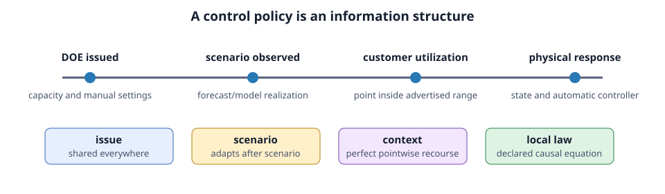
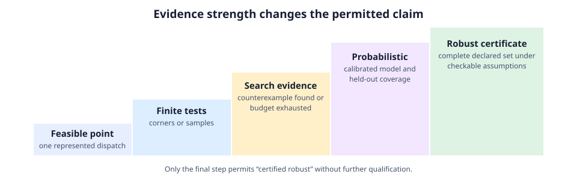

Dynamic operating envelopes
Kind: Problem specification · Maturity: research prototype · Direction: forward · Temporal: per-interval
New readers should begin with Dynamic operating envelopes in 15 minutes, then return here for stable semantics and result-field definitions.
For the stable-versus-planned implementation boundary, see the DOE development roadmap. The claim hierarchy and detailed rationale are in the scientific audit; source-by-source boundaries are in DOE literature: evidence and interpretation.
solve_operating_envelope allocates an active-power import or export capacity to each participating connection while retaining the nonlinear, unbalanced four-wire network model and all operational limits declared in the BMOPFTools case.
The DOE layer does not treat ordinary LV reactive power as freely dispatchable:
- loads retain the known P/Q values in each DSSE-derived snapshot;
- PV and battery connection points can bind to an existing BMOPFTools
ibr, so its mandatory Volt-VAr/Volt-Watt or fixed-power-factor law remains enforced; - a STATCOM is a separate network device and is dispatchable within its own converter limits.
All capacities returned by this API are positive watts. direction=:export means injection into the network and direction=:import means withdrawal.
Terminology
| Term | Meaning in PowerOptLab |
|---|---|
| Allocation | Capacity values selected by an optimization; not a guarantee by itself |
| Operating point | One joint realization of participant powers, network conditions, states, and controls |
| Utilization set | The participant fractions at which an advertised allocation is interpreted or tested |
| Scenario | One declared realization of exogenous load, generation, source, topology, or network parameters |
| Recourse | A free control decision allowed to depend on information revealed after issuance |
| Local law | A declared causal controller equation, rather than a freely re-optimized setpoint |
| Verification | A fixed-capacity evaluation at declared scenarios and utilization points |
| Falsified | An admissible candidate point produced a repeated violation under the recorded numerical procedure |
| Search-stable | No counterexample was found within a finite, recorded search budget |
| Certificate | A mathematical argument covering the complete declared set under stated assumptions |
The literature uses DOE for more than one object. A time-varying bound-point allocation, a finitely tested independent range, a certified decoupled box, a coupled P–Q operating region, and a market-shaped allocation must not inherit one another's claims merely because they share the same name. This API records geometry, tested set, recourse, uncertainty semantics, and solver class separately so it can represent and compare those formulations.

Security semantics
There are two deliberately distinct modes:
| Mode | AC dispatches included in the optimization | Claim |
|---|---|---|
security=:bound_point | all participants simultaneously at their allocated bound | Feasible upper-bound allocation only |
security=:corners | every zero/full-utilisation corner of the allocated box | Local AC feasibility at every represented corner |
The corner mode creates $2^N$ network contexts per forecast scenario and is therefore limited by max_exact_corners (10 participants by default). It is a much stronger test than the bound point, but it is not labelled a global robust certificate: the AC feasible set is non-convex and an interior hole may exist even when every corner is feasible. The exact scope and solver primal status are recorded in result.diagnostics.
Diagnostics also report worst tested voltage, ampacity and negative-sequence margins, their network locations, and constraints within reporting tolerance of binding. minimum_margins retains physical units; the corresponding minimum_normalized_margins divides each margin by its declared limit so points can be ranked within and across these constraint families. For security=:corners, the margins are aggregated across every scenario and corner rather than only the displayed representative snapshot.

The machine-readable claim metadata includes:
global_certificate=falsefor every current solve;solver_class=:local_nonlinear;uncertainty_semantics, distinguishing one declared snapshot from a finite scenario set;control_policy, its deterministiccontrol_policy_signature,control_policy_source,control_default_stage, and a per-controlcontrol_auditcontaining native classification, selected stage, automatic law, equality groups, and link count;control_nonanticipativity,nonanticipativity_enforced, andideal_recourse_used;prescribed_ibr_controls=:retained; andsecurity_scope=:explicit_utilization_pointsfor custom verification sets.
Result and missing-value semantics
| Field | Unit or type | Interpretation |
|---|---|---|
envelope[id][t] | W, positive magnitude | Published one-sided capacity for participant id; NaN if interval t is not publishable |
total_capacity[t] | W | Sum of published participant capacities; NaN follows an unpublished interval |
termination_status[t] | solver status string | Optimizer termination evidence, not a physical guarantee |
diagnostics[t]["feasible"] | Bool | A usable local primal point was found for the represented joint model |
diagnostics[t]["security_scope"] | Symbol | Exact set of utilization points represented during allocation |
diagnostics[t]["global_certificate"] | Bool | Always false for current nonlinear DOE solvers |
diagnostics[t]["minimum_margins"] | physical units by constraint family | Smallest recomputed margin among currently instrumented voltage, current, and unbalance families; absence is not an infinite margin |
diagnostics[t]["control_audit"] | records | Resolved shared, scenario-adaptive, local-law, and context-adaptive controls |
verification.context_results[t] | context records | Per-scenario and per-utilization status, margins, replay, and candidate evidence |
Missing diagnostics mean that the quantity was not available or not instrumented; they do not mean zero violation. An infeasible solver iterate is never converted into an envelope value.
Prescribed connection-bound IBR control laws remain enforced, but other controllable-asset recourse can make a material difference. The legacy default is pointwise PerfectRecourse. Pass it explicitly when reproducing an anticipative published formulation or calculating an ideal-recourse benchmark; use IssuePlusLocalLaws when free supported setpoints must be shared across the represented contexts. The limitation is an unstated mismatch between the selected information structure and the operational claim, not the existence of more than one legitimate research formulation.
Control-recourse policies
ideal = solve_operating_envelope(scenario_nets, cps;
security=:corners, control_policy=PerfectRecourse())
operational = solve_operating_envelope(scenario_nets, cps;
security=:corners, control_policy=IssuePlusLocalLaws())
mixed = DOEControlPolicy(
default_stage=:issue,
rules=[DOEControlRule(component=:ibr, id="statcom_lv17",
quantity=:reactive_power, stage=:scenario)],
on_unclassified=:error):issue creates one value per interval, :scenario creates one value per scenario and shares it across utilization points, :local_law denotes an implemented automatic equation, and :context permits independent pointwise recourse. Native transformer taps and IBR active/reactive power can be linked. Free generator P/Q is audited but cannot yet be linked safely, so fail-closed policies reject it unless an explicit :context rule is supplied.
Research extensions can participate through DOEControlRegistration and context_hook!. A registration names a stable BMOPFTools OpfModelKey, canonical unit, native classification, automatic law, scale, and provenance metadata. This keeps policy rules independent of JuMP variable names.
Context evidence and fixed-control replay
verify_operating_envelope returns context_results[t], containing one OperatingEnvelopeContextResult per scenario and utilization point. A feasible joint policy solve is independently repeated one context at a time with its optimized free controls fixed. The replay records its status, completeness, snapshot, margins, and maximum complex-voltage difference from the joint solve.
Verification inherits direction, control policy, per-unit base, smoothing and registered context hook from an OperatingEnvelopeResult, unless explicitly overridden. Its recorded :issue and :scenario control values are fixed at their canonical values in the new utilization contexts. Scenario controls match stable scenario IDs and network hashes, allowing reorder/subset replay. Untyped inputs require unique matching hashes; ambiguous repeats require typed IDs. Changed scenario content is rejected unless replay_control_stages=(:issue,) is selected to permit new scenario recourse, as held-out coverage does by default. Connection IDs, buses, phase/neutral declarations and IBR bindings must match issuance. Diagnostics report issued_control_replay_source and issued_control_replay_count. Passing only a capacity dictionary cannot reproduce issued controls and is labelled :capacity_values_only; set replay_issued_controls=false only for an explicit re-optimization experiment.
When a joint model fails, contexts are diagnosed separately. If they are all individually feasible, diagnostics use :shared_control_incompatibility_or_joint_nlp_failure; they do not invent a single offending context. Individual witnesses count as passes only when no unfixed shared control couples them to other contexts. A failed or incomplete requested replay is unresolved, even if the original joint solve succeeded.
| Numerical evidence | Interpretation |
|---|---|
| Published feasible witness | Local feasibility of the represented model |
INFEASIBLE / LOCALLY_INFEASIBLE on one context | Candidate local infeasibility; no physical impossibility certificate |
| Time/iteration limit, interruption, invalid model, numerical error | Unresolved, regardless of the last iterate |
| Individual witnesses without a common required policy | Unresolved policy compatibility |
| Missing fixed-control replay handles or failed requested replay | Unresolved replay |
context.feasible preserves the raw solve result. Use the context diagnostic verification_verdict (:passed, :candidate_violation, :unresolved) for usable verification evidence. Interval feasible=false means verification did not establish a pass, not that physical infeasibility was proved. Coverage and search use the same effective verdict. Unresolved cases enter conservative coverage rates and bounds as adverse outcomes; repeated numerical failures remain inconclusive under multistart confirmation.
Finite interior search and multistart
search_operating_envelope_utilizations verifies a deterministic Halton set inside the advertised box. Its outcomes are deliberately limited to :search_stable, :candidate_counterexample, and :inconclusive. search_operating_envelope_adversarial adds deterministic coordinate refinement around the points with the smallest normalized constraint headroom. It is a more targeted falsification heuristic, but it still searches only a finite set and does not prove that its worst point is globally worst. confirm_operating_envelope_counterexample repeats a candidate from multiple deterministic starts and distinguishes repeated failure, successful reproduction of feasibility, and inconclusive evidence. solve_adversarial_search_stable_operating_envelope alternates allocation and adaptive search, replays the allocation's issued controls during each search, and retains every intermediate allocation. solve_search_stable_operating_envelope adds the screened set to a counterexample-guided allocation loop. Neither API reports a global certificate.
solve_operating_envelope_multistart perturbs registered-variable start values deterministically, retains every run, and reports capacity spread and independently evaluated JuMP primal-constraint residuals. Selection follows the requested fairness objective, not capacity alone: intervals are compared in chronological order, with primary then secondary objectives for max-min policies. Primary differences within max_min_tolerance are treated as ties. The returned diagnostics expose the attained objective keys and tolerances.
Reproducibility manifest
DOEStudySpec hashes every interval/scenario network and the connection declarations with SHA-256, then records coverage, control/fairness policies, solver options, seeds, extension metadata, and software versions. Store doe_study_manifest with every published result.
Migration note
At allocation, omitting control_policy selects pointwise PerfectRecourse() and records control_policy_source=:legacy_default. At verification, rich results inherit their issued policy (:issued_result); bare capacity dictionaries retain the default and cannot reproduce issued controls. Explicit policy changes are re-optimization experiments and are labelled in control_reoptimization. New research allocations should name the policy explicitly.
An IBR may bind only one connection point, and the connection's phase/neutral order must match the device terminal map. Legacy ports are now restricted to one phase: the old multiphase aggregate-Q equality allowed unrequested phase P/Q redistribution. Migrate to separate independently controlled phase ports or an IBR whose topology represents the intended coupled device. The original four-argument OperatingEnvelopeVerification constructor remains available; new verification results additionally populate context_results.
If an interval has no feasible primal point, its capacities and total are NaN. The package never publishes values from an infeasible solver iterate.
Basic export envelope
The lightweight connection port is useful for teaching cases. It injects active power at aggregate unity power factor.
using PowerOptLab
cps = [ConnectionPoint(id="der1", bus="bus1", export_max=10e3),
ConnectionPoint(id="der2", bus="bus2", export_max=10e3)]
# One network Dict is one interval. A Vector{Dict} is a time series.
r = solve_operating_envelope(net, cps;
direction=:export,
fairness=:equal,
security=:bound_point)
r.envelope["der1"] # positive W
r.total_capacity
r.diagnostics[1]["security_scope"]Use security=:corners when the connection may operate anywhere between zero and its advertised bound and the participant count is small enough for exact corner enumeration.
Forecast and model scenarios
A vector of vectors groups alternative forecasts or network models by interval. One envelope is shared by all scenarios in an interval.
# Two time intervals, each with three load/source/network scenarios.
scenario_nets = [
[net_t1_central, net_t1_low, net_t1_high],
[net_t2_central, net_t2_low, net_t2_high],
]
r = solve_operating_envelope(scenario_nets, cps; security=:corners)
r.diagnostics[1]["scenario_count"] # 3Scenarios may represent demand/PV forecast error, source-voltage uncertainty, topology alternatives, or candidate impedance models. In particular, candidates or profile intervals produced by solve_inverse_carson can be materialized into alternative network scenarios.
Use DOEScenario and DOEScenarioSet when the ensemble is part of a scientific experiment. They record stable IDs, train/calibration/ validation/test/stress roles, optional relative weights, sources, construction methods, seeds, timestamps, and metadata. The solver includes this provenance in interval diagnostics, while DOEStudySpec includes it in the study identity.
DOEUncertaintySample and DOEUncertaintySampleSet separate uncertainty realizations from network construction. A reproducible Gaussian sampler accepts positive-semidefinite covariance and records rank, seed, declared/empirical moments, and unbounded-support limitations. sample_doe_box_truncated_gaussian_uncertainty provides an explicit physical-support option: it samples the Gaussian conditional on componentwise bounds by rejection, never clips accepted values, and requires a finite draw budget whose stopping and acceptance diagnostics are recorded. The declared Gaussian and box remain modelling assumptions rather than validated truths. sample_doe_empirical_residual_bootstrap resamples a versioned residual library either row-wise or in contiguous moving blocks. It hashes the complete library, distinguishes source from target timestamps, and propagates block, source-row, and circular-wrap provenance. Flattened block members are not labelled independent, and the implementation does not establish stationarity, block-length adequacy, residual calibration, or bootstrap validity. materialize_doe_scenarios deep-copies a base network per sample and requires a versioned materializer identifier, propagating sample and network provenance without prescribing a DSSE, impedance, topology, or forecast schema.
evaluate_operating_envelope_coverage selects declared roles and reports per-scenario outcomes plus empirical context, scenario, weighted, and conservative candidate-violation rates. A one-sided Hoeffding upper bound is returned only when the caller explicitly sets iid_assumption=true; weights do not create an i.i.d. claim and distribution shift remains unassessed.
split_doe_scenarios_by_time constructs a one-interval blocked calibration/test split with an optional exclusion gap. It prevents timestamp overlap and can reject, exclude, or explicitly retain metadata-group overlap. audit_doe_scenario_calibration reports ID, exact-network, time, group, provenance, and effective-sample-size diagnostics under caller-selected separation requirements. It does not infer independence or probability calibration. evaluate_operating_envelope_coverage_curve repeats held-out evaluation over a finite capacity-scale grid while retaining recorded issue-time controls. compare_doe_coverage_shift describes performance deltas between two evaluated ensembles without labelling them as statistical evidence that their generating distributions differ. compare_doe_uncertainty_models applies one issued envelope and one evaluation declaration to multiple labelled scenario sets. It returns long-form coverage curves and pairwise deltas, classifying comparisons as paired, partially paired, or unpaired from explicit sample identities, timestamps, scenario IDs, or a caller-selected metadata key. Pairing adds finite-sample discordance evidence; it does not establish a causal model effect or verify that the evaluation sets were independent of capacity selection. test_doe_covariate_shift adds pooled-scale multivariate energy distance and per-feature effects for explicitly named numeric metadata. Its permutation p-value is disabled unless the caller asserts scenario- or group-level exchangeability, and its claim remains limited to those covariates. test_doe_time_series_covariate_shift provides a narrower temporal design: a contiguous reference window is circularly shifted over a regularly sampled ordered series. Inference requires an explicit circular-shift-invariance assertion, which is stronger than ordinary stationarity; seasonality, trends, interventions, and the artificial wraparound remain caller concerns. evaluate_doe_probability_calibration evaluates separately issued violation-probability forecasts using reliability bins, proper scores, calibration error, and a Brier decomposition for bin-mean forecasts with an explicit remainder relating it to the original forecast score. Its coverage adapter keeps unresolved solves missing and ignores scenario weights unless explicitly requested. Weighted Hoeffding intervals require a separate observation- independence assertion.
PV and batteries with mandatory Q-V control
For realistic DER behaviour, place the converter in the network's ibr block and attach the required BMOPFTools control_profile. Bind the connection point to that IBR:
cp = ConnectionPoint(id="customer_17", bus="lv17", ibr_id="pv17",
export_max=10e3, import_max=5e3)
export_doe = solve_operating_envelope(net, [cp]; direction=:export)
import_doe = solve_operating_envelope(net, [cp]; direction=:import)The active-power equality used by the DOE is added to the existing IBR model. Its per-phase topology, current limit, apparent-power circle, DC coupling and Volt-VAr/Volt-Watt equality are not replaced. There is intentionally no separate Q-envelope decision.
With and without a STATCOM
STATCOMs are normal BMOPFTools network devices, so the comparison is made by solving two otherwise identical cases:
using BMOPFTools: add_statcom!, augment_case
without_statcom = deepcopy(net)
with_statcom = deepcopy(net)
add_statcom!(with_statcom, "lv17"; s_max=50e3)
with_statcom, _ = augment_case(with_statcom)
r0 = solve_operating_envelope(without_statcom, cps)
r1 = solve_operating_envelope(with_statcom, cps)
gain = r1.total_capacity[1] - r0.total_capacity[1]
q_statcom = r1.snapshots[1]["ibr"]["statcom_lv17"]The default STATCOM is reactive-only. BMOPFTools also supports a four-wire, DC-link-coupled D-STATCOM that circulates active power between phases while its net active exchange remains zero; this can be important in resistive, unbalanced LV feeders.
Parameterized fairness
The legacy symbols remain available:
:equal— equal absolute kW;:sum— maximum aggregate capacity;:proportional— proportional fairness.
Use FairnessPolicy for explicit policy design:
policy = FairnessPolicy(
kind=:max_min,
normalization=:capacity,
weights=Dict("der1"=>1.0, "der2"=>1.5))
r = solve_operating_envelope(net, cps; fairness=policy)Available allocation objectives are :equal, :max_total, :proportional, :alpha, :max_min, and :equal_curtailment. Normalization can use:
| Normalization | Reference |
|---|---|
:none | 1 W: absolute allocation/curtailment |
:capacity | directional import/export nameplate |
:request | ConnectionPoint.requested forecast/request |
:custom | ConnectionPoint.normalization |
For example, equal allocation with normalization=:capacity gives equal fractions of nameplate rather than equal kW. :max_min performs a second local solve to maximize total capacity while retaining the best normalized minimum. kind=:alpha exposes the standard alpha-fair family: alpha 0 is weighted sum, alpha 1 is proportional fairness, and larger alpha increasingly emphasizes the least-served participant.
OperatingEnvelopeResult.fairness_metrics records normalized allocations, curtailment fractions, total capacity and Jain's index for every published interval. To compare an explicit policy frontier, solve the same study under multiple policies:
results = compare_operating_envelope_policies(net, cps,
["equal" => :equal,
"efficient" => :sum,
"proportional" => FairnessPolicy(kind=:proportional,
normalization=:capacity)])Rolling fairness and publication
For operational issuance, temporal_fairness=:cumulative_max_min carries a normalized service history between intervals and, at each new interval, prioritises the least-served participant before maximizing the remaining weighted allocation. It is a rolling policy—not a horizon-wide optimiser—and therefore does not assume perfect future forecasts.
History stores unweighted accumulated normalized service, $H_i = \sum_t \Delta t\,c_{it}/r_i$. The next primary objective is $\max\min_i (H_i + \Delta t\,c_i/r_i)/w_i$: entitlement weights divide both past and current service. With capacity normalization, history has units of hours; with a 1 W reference it is numerically energy in Wh divided by 1 W. Carry the returned cumulative_normalized history forward without dividing it by weights again. Keep the normalization references consistent across calls.
using Dates
r = solve_operating_envelope(nets, cps;
fairness=FairnessPolicy(kind=:max_min, normalization=:capacity),
temporal_fairness=:cumulative_max_min,
fairness_history=Dict("der1" => 2.4), # prior normalized service
temporal_dt_h=5 / 60,
issued_at=DateTime(2026, 7, 16, 9),
interval_seconds=300,
validity_seconds=600)r.schedule contains issue and validity times plus the publication source. On an infeasible solve, fallback=:missing (default), :zero, or :last_feasible controls what is published. A fallback is explicitly marked as not freshly network-safe; use verification before relying on it.
Verify an issued envelope
Verification fixes an issued allocation rather than re-optimising it. It can check the simultaneous upper point, every box corner, or custom utilisation points across all scenarios:
check = verify_operating_envelope(nets, cps, r; utilizations=:corners)
all(check.feasible) || @warn "issued DOE needs review" check.diagnosticsThe check retains the network's prescribed Q-V controls and any STATCOM. Its diagnostics report local nonlinear feasibility and inherited voltage, thermal and negative-sequence margins at the tested points.
Network constraints and use cases
The DOE adds no parallel approximation of network limits. It inherits the constraints already present in the BMOPFTools case, including:
- phase-to-ground, phase-to-neutral and phase-to-phase voltage bounds;
- line, transformer, switch, neutral and converter current limits;
- positive-, negative- and zero-sequence voltage limits such as
vneg_max; - prescribed inverter controls and converter ratings;
- controllable network assets already represented by the OPF.
The tests include voltage-limited, thermally limited, negative-sequence-limited, import, multi-scenario, prescribed-Q-V and STATCOM-assisted examples. They also cover invalid inputs and infeasible baseline/corner cases. The independent analytic reference suite checks closed-form phase voltages, import/export limits, negative sequence, and exact affine box containment. The marked tutorials execute their actual Markdown code in CI.
DSSE-to-DOE validation runner
The repository includes scripts/validate_doe_from_dsse.jl for feeder studies with an executable synthetic case included in the unit-test suite. It keeps three questions distinct: whether DSSE reconstructs the observed state, whether the DOE is feasible under its own nonlinear model, and whether a separately fixed AC power flow reproduces the issued upper-bound point.
Create a case-builder file that defines doe_validation_case() and run:
julia --project=. scripts/validate_doe_from_dsse.jl path/to/my_case.jlThe returned named tuple must contain:
physics_net: a passive network suitable forsolve_state_estimation;operational_net: the matching DSSE snapshot with known P/Q loads and controllable network assets;measurements: the DSSEMeasurementvector;connection_points: DOE connection points bound to existing, single-phase IBRs (ibr_idis required for the independent power-flow check);materialize_estimate(estimate, operational_template): an explicit adapter returning a network populated from the DSSE result. The runner passes a deep copy of the operational template. Apply it to both base and STATCOM templates.
It may also provide truth_net (the measurement-generating operational state), with_statcom_net (the otherwise-identical STATCOM case), and doe_keywords (a NamedTuple forwarded to solve_operating_envelope). The runner reports DSSE voltage error against the truth power flow, DOE capacity, DOE verification, the maximum voltage difference between DOE and a separate fixed-setpoint solve_pf, and STATCOM capacity gain where supplied. Customer active power uses the issued direction. Free IBR P/Q is fixed to the recorded solution; constant power-factor laws remain in force. The pinned PF engine strips s_max, which changes rating-normalized droop bases. This adapter therefore rejects Volt-VAr and Volt-Watt profiles explicitly; use the main DOE verifier to replay those laws faithfully. Unsupported free controls (including taps and custom extensions), custom smoothing, or custom context hooks cause an explicit error. The pinned separate-PF API cannot faithfully carry those settings yet.
The runner requires convergence, a feasible primal witness, complete finite complex-voltage comparisons and a 1 mV DOE/PF agreement tolerance. It is an independent build of the same engine's power-flow equations, not an independent software oracle or a range certificate. The synthetic adapter uses estimated net P/Q as demand only because its pre-DOE DER dispatch is known to be zero and each bus has one load. General feeders need explicit load/DER disaggregation; voltage estimates alone do not identify individual device demand.
Current limitations
- Ipopt returns local nonlinear solutions; diagnostics never imply global optimality or global robust feasibility.
- Exact corner enumeration scales exponentially.
- Control discovery currently covers native free transformer taps, IBR P/Q, and explicit generator P/Q bounds. Generator P/Q lacks a stable power handle for non-anticipativity. Custom extensions can register semantic controls, but undeclared extension variables cannot yet be distinguished automatically from physical state variables.
- A finite scenario set has no probability or confidence meaning. Scenario provenance, calibration, weights, and held-out coverage are caller concerns.
- Verification returns an interval verdict plus structured per-context evidence, but a proven infeasibility certificate and normalized violation-maximization problem remain future work.
- The current object is a one-sided active-power box. It does not jointly issue lower/upper import-export limits or a coupled P-Q flexibility set.
- Rolling fairness is causal rather than globally horizon-optimal; temporal storage scheduling and forecast co-optimisation remain later work.
- Diagnostic margin summaries do not yet enumerate every inherited network and device constraint family.
- The independent DSSE validation runner presently fixes single-phase IBR active-power setpoints. Multi-phase dispatch replay should preserve the DOE's per-phase allocation before being treated as an independent validation.
- Harmonic RMS/THD constraints require a harmonic network model and are outside the current fundamental-frequency prototype.